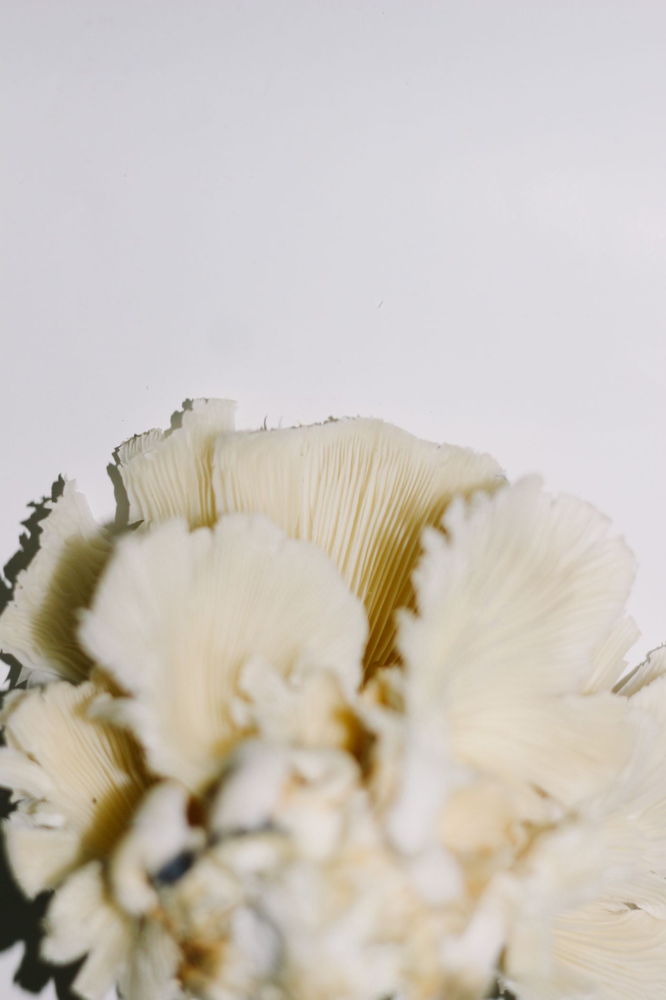
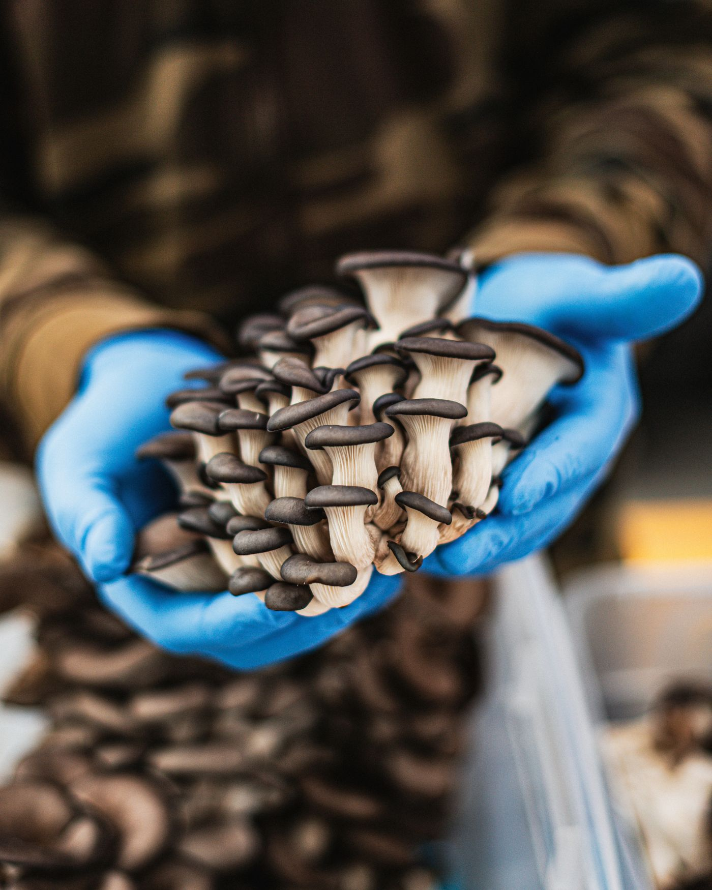
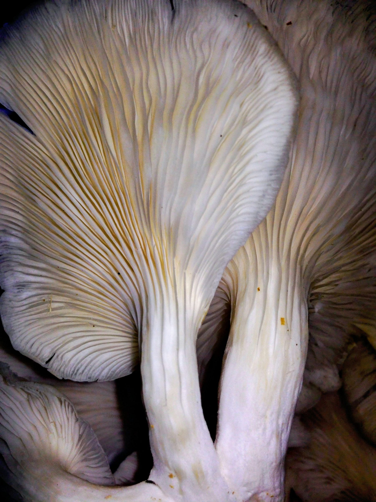
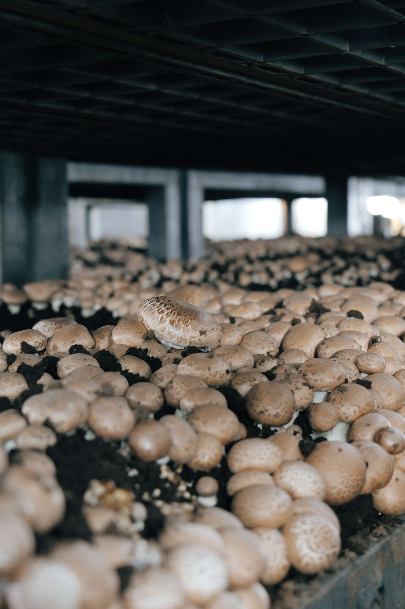
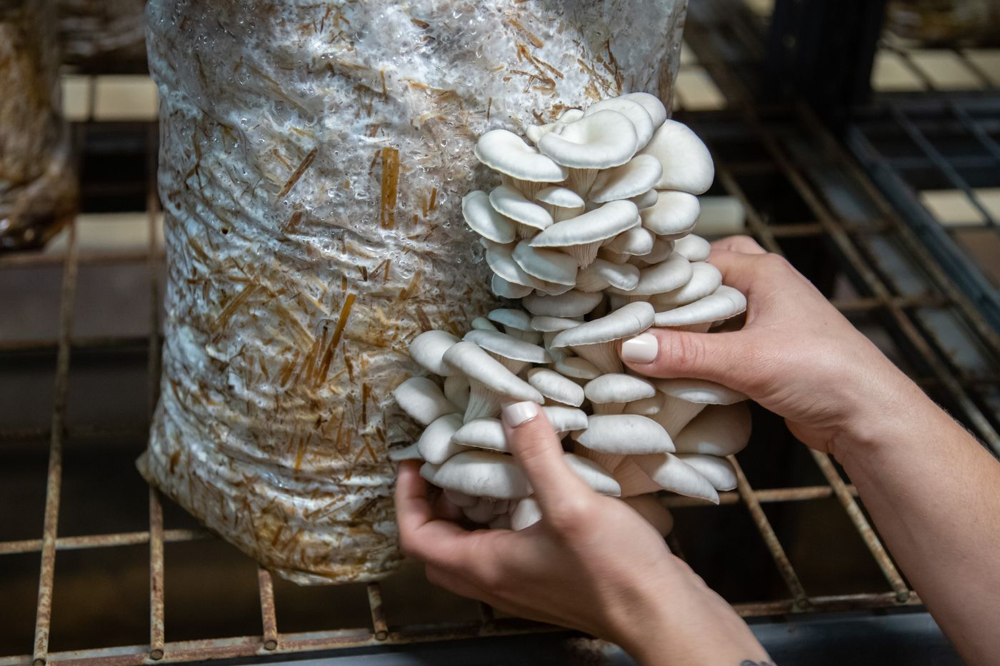

Our featured mushroomFungi no. 01
Oyster mushrooms
Distinctive fan-shaped caps and soft, layered forms make oyster mushrooms a wonderful introduction to the world of fungi.
Enquire about oyster mushrooms
Grown with curiosity, shared with care
Discover the fascinating world of fungi with NOT JUST FUNGI LLP. Explore our mushroom cultivation, products and growing journey.
Anekal, Karnataka, India
A little about us
We are NOT JUST FUNGI LLP, a mushroom-focused business based in Karnataka.
Our work begins with a curiosity for fungi and a respect for the care cultivation calls for. We are building a thoughtful journey around growing mushrooms and making them more accessible to customers.
Every growing cycle is an invitation to learn, pay attention and share the simple beauty of mushrooms.
Get to know usFrom our world of fungi
One variety to begin with. For current availability and product details, simply get in touch.

Our featured mushroomFungi no. 01
Distinctive fan-shaped caps and soft, layered forms make oyster mushrooms a wonderful introduction to the world of fungi.
Enquire about oyster mushroomsA closer look at the process
A general overview of a mushroom-growing cycle. Practices vary by species and growing setup.
A suitable growing material is selected and prepared to create a base for the mushroom culture.
Mushroom spawn is introduced to the prepared substrate, then given time to establish.
Conditions are observed and managed as the mycelium develops and mushrooms begin to form.
Mushrooms are gathered at the appropriate stage and handled with care after harvest.
This is a general cultivation overview, not a confirmed description of NOT JUST FUNGI LLP's specific methods.
A visual field guide
Representative mushroom and cultivation imagery. These are not photographs of our farm.



We welcome owner-supplied farm photographs to replace these representative references.
Let’s start a conversation
Ask us about current availability, product varieties or bulk enquiries. Households, retailers, restaurants and food businesses are welcome to get in touch.
We’d love to hear from you
For product enquiries, availability or simply to learn more, reach us directly.